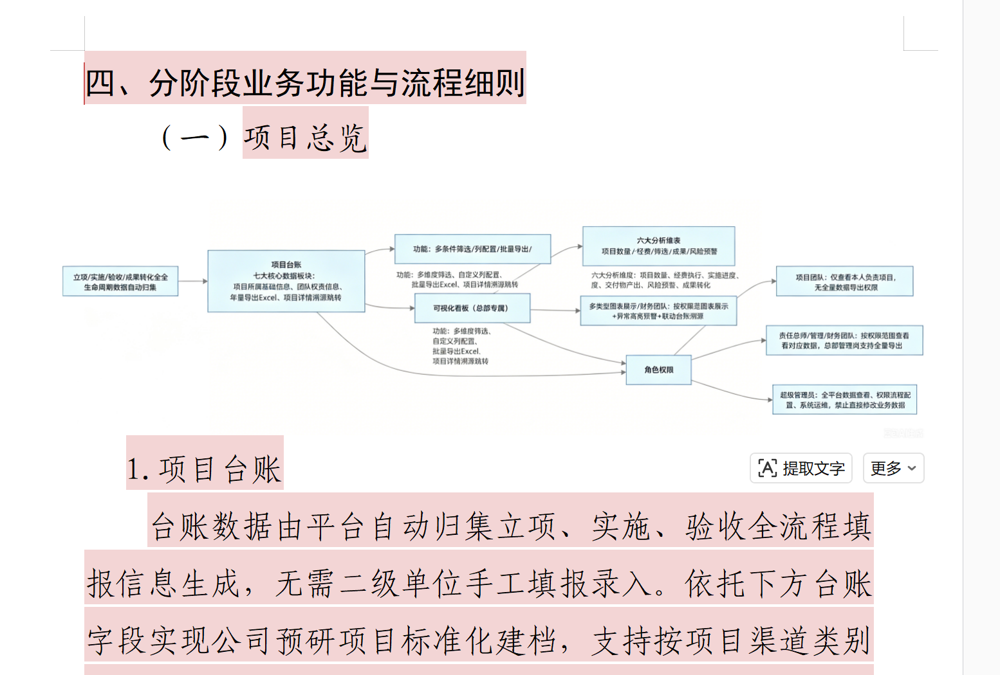
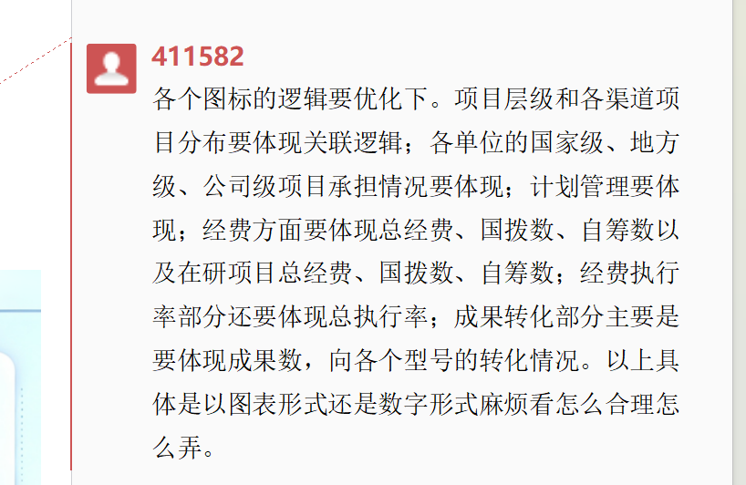

科研项目信息化管理平台 V19 二次开发功能完善情况说明
检查日期：2026-07-12 ｜ 检查方式：需求文档/截图解读、V19 对照矩阵核对、源码静态检查、运行接口冒烟验证。
本说明只对当前平台二次开发完成度进行检查和归纳，未修改平台业务源码。报告中的“待补充”主要指真实业务口径、外部系统联调、真实表格模板或后续生产化能力。
74
V19 矩阵待补充/更新事项
41
运行验证项目台账项目数
8
成果转化台账成果包数
13
表单过渡工具字段口径数
一、检查依据
- 《待补充更新需求V19-平台功能更新V19对照矩阵.html》：共整理 74 项，包含新增待建、本轮更新、同步映射、待确认、暂缓删除等状态。
- 《科研项目信息化管理平台需求V19.docx》：重点读取正文与 Word 批注，其中批注 411582 明确提出看板图标逻辑优化要求。
- 用户截取的两张图片：聚焦“项目总览/项目台账”架构图与批注 411582 的看板指标要求。
- 当前平台源码与运行服务：
platform/server/src/api.js、platform/web/src/pages/cockpit/Cockpit.tsx、Ledger.tsx、Transformations.tsx、TransitionTool.tsx等。
二、截图重点要求解读


批注 411582 的核心不是简单增加几个数字卡片，而是要求看板指标之间体现业务关联：项目层级影响渠道分布，单位承担需按国家级/地方级/公司级展开，计划、经费、执行率和成果转化均需能从台账源头汇总并支持明细溯源。
三、总体检查结论
| 模块 | 完成度判断 | 说明 |
|---|---|---|
| 领导角色与权限 | 已完善 | 已新增领导账号与角色；领导导航限定为可视化看板、项目台账、成果转化台账；项目台账全量导出接口对领导返回 403，符合只读决策查看定位。 |
| 项目台账 V19 口径 | 部分完善 | 台账已补充 V19 派生字段、经费拆分、交付/协作/成果摘要、列配置和导出；但“真实表格字段、下拉枚举、批量导入模板、8 大板块完全字段字典”仍需业务侧最终确认。 |
| 可视化看板图标逻辑 | 已完善 | 已覆盖层级/渠道、单位×层级矩阵、计划管理、经费结构、在研经费、总执行率、成果转化和型号转化分布；表现形式采用 KPI、图表和矩阵混合方式。 |
| 立项查重 | 接口已留 | 申报页已有“项目查重”入口，后端提供基础字段相似度接口并写审计；高级相似度、历史库/知识库算法、强阻断策略仍为后续接口。 |
| 成果转化独立板块 | 已完善 | 成果转化已作为一级业务模块和独立台账呈现，支持成果包统计、向型号/向市场转化、状态筛选、型号/应用对象分布，并与看板、项目详情联动。 |
| 后评价暂缓/删除 | 已处理 | 前端后评价入口被隐藏/重定向，接口不再返回后评价业务数据，审批和预警过滤后评价；数据库表结构保留作为后续阶段接口。 |
| 表单过渡工具 | 演示版完成 | 已完成字段口径、专项分表统计、自动总表、重复/必填校验、演示导入和一键导出；真实 Excel 上传解析、业务真实模板和内网部署流程待补。 |
四、批注 411582 看板要求逐项核对
| 批注要求 | 当前实现 | 状态 | 待补充说明 |
|---|---|---|---|
| 项目层级和各渠道项目分布体现关联逻辑 | 驾驶舱提供层级筛选与渠道分布图，页面标题为“层级关联下的渠道项目分布 TOP8”，接口返回 byLevel、byChannel。 |
已完善 | 后续可增强为点击层级图直接联动渠道图，目前已通过筛选和同源接口体现关联。 |
| 各单位国家级、地方级、公司级项目承担情况 | 驾驶舱新增“承担单位 × 项目层级承担矩阵”，接口返回 unitLevelMatrix，包含单位、国家级、地方级、公司级、在研、已验收。 |
已完善 | 可继续增加按单位点击跳转项目台账筛选。 |
| 计划管理要体现 | 驾驶舱新增“计划管理状态”，展示计划总数、待办、完成、办结率、四色计划数和 CMOS 同步状态；接口返回 planStats。 |
已完善 | CMOS 当前为演示同步/接口占位，真实系统联调后需记录真实同步时间和失败原因。 |
| 经费体现总经费、国拨数、自筹数 | 驾驶舱 KPI 与“经费构成”图展示总经费、国拨、自筹、商飞内部经费；接口返回 fundStructure.total、centralGrant、selfFund。 |
已完善 | 需业务确认是否还需按项目渠道/年度拆分。 |
| 在研项目总经费、国拨数、自筹数 | 接口返回 activeTotal、activeCentralGrant、activeSelfFund，看板“经费构成”卡片展示在研口径。 |
已完善 | 建议补充“在研”口径说明：当前按实施中/验收中统计。 |
| 经费执行率体现总执行率 | 新增“总执行率” KPI，运行验证值为 67%；接口字段为 kpis.totalExecRate 和 fundStructure.totalExecRate。 |
完成待确认 | 当前公式为累计支出 / 项目总经费；矩阵要求公式需业务确认，若改为可执行经费口径需调整。 |
| 成果转化体现成果数 | 驾驶舱展示成果包总数、已完成数、转化状态图；运行验证成果包 8 项，其中已完成 2 项。 | 已完善 | 后续可增加成果类型、成果等级等维度。 |
| 体现向各型号的转化情况 | 驾驶舱和成果转化台账均展示“型号转化分布”，接口返回 modelTransform，运行验证有 4 个型号/应用对象统计行。 |
已完善 | 型号/应用对象字典尚待业务侧统一。 |
五、V19 对照矩阵功能完成情况
| 需求主题 | 实现证据 | 完成情况 | 后续建议 |
|---|---|---|---|
| 新增领导角色 | seed.js 增加 u_leader；Shell.tsx 为领导配置看板、项目台账、成果转化台账；Admin.tsx 权限矩阵新增领导列。 |
已完善 | 保留当前“领导默认不导出全量台账”策略，待业务确认是否开放授权导出。 |
| 项目台账大修改 | api.js 派生 v19 字段组；Ledger.tsx 展示层级/渠道、专业/单位、经费拆分、交付/协作、成果转化等列；Excel 导出附 V19 字段口径工作表。 |
展示层完成 | 真实字段字典、八大板块全量字段、导入模板、下拉枚举和历史数据迁移规则需业务表格定版后补齐。 |
| 项目查重入口 | Declare.tsx 提供“项目查重”按钮和结果弹窗；/api/project-duplicates 支持编号、名称、渠道、级别、单位、负责人、关键词基础相似度。运行验证使用 KY-2024-001 命中 1 条。 |
基础版完成 | 高级文本相似度、知识库历史项目库、强阻断策略、差异说明附件仍为待补接口。 |
| 成果转化单独一块 | Transformations.tsx 已作为独立页面；/api/transformations 返回成果包、项目、转化方式、状态、型号/交易对象、交付物明细和统计。 |
已完善 | 后续补充审核流、佐证材料上传、转化收益字段。 |
| 暂时删除后评价 | App.tsx 将 /post-evals 重定向；Evaluations.tsx 不展示后评价 Tab；接口 /api/evaluations 返回 postEvals: []。 |
已处理 | 保留表结构和类型定义，便于后续重新启用。 |
| 表单过渡工具 | TransitionTool.tsx 支持分表视图、字段校验、演示导入、编辑保存和一键导出；/api/transition-tool 运行验证字段 13 个、数据 10 行、分表 3 个。 |
演示可用 | 真实 Excel 批量上传解析、字段映射配置、内网机部署包和迁移入正式平台的导入任务待补。 |
| 看板与台账溯源 | 风险榜、型号转化图、成果台账、项目详情等已可跳转；项目台账支持多条件筛选和列配置。 | 主要路径完成 | 所有图表点击回台账明细的统一联动规则仍可继续加强。 |
六、运行接口验证记录
| 验证项 | 接口/页面 | 结果 |
|---|---|---|
| 平台首页 | http://127.0.0.1:18088/ |
返回 200，标题为“科研项目信息化管理平台”。 |
| 驾驶舱 | /api/dashboard |
项目总数 41，在研 30，总执行率 67%，计划 153 条，成果包 8 项，型号转化统计 4 行。 |
| 经费结构 | /api/dashboard.fundStructure |
总经费 189040 万，国拨 82621 万，自筹 36348 万；在研总经费 148200 万，在研国拨 61246 万，在研自筹 27800 万。 |
| 成果转化台账 | /api/transformations |
返回 8 个成果包，向型号转化 4 项，向市场转化 4 项，已完成 2 项，逾期 1 项。 |
| 表单过渡工具 | /api/transition-tool |
字段 13 个，记录 10 行，专项分表 3 个，无重复记录，无无效记录。 |
| 领导台账导出限制 | /api/projects.xlsx，请求头 x-user: u_leader |
返回 403，符合领导只读且默认不开放全量导出的策略。 |
| 项目查重 | /api/project-duplicates |
使用项目编号 KY-2024-001 查询，命中 1 条“氢电飞机验证机研制”，基础字段算法可用。 |
| 后评价暂缓 | /api/evaluations、/api/approvals |
协作评价 17 条，后评价 0 条；审批列表中 post_eval 为 0。 |
七、已完善功能清单
- 领导角色、登录入口、导航可见性、项目台账/成果转化只读提示、领导导出限制。
- 项目台账 V19 展示字段：层级/渠道、专业/单位、项目周期、状态预警、里程碑、经费拆分、年度预算/支出、交付/协作、成果转化摘要。
- 可视化看板新增/优化：层级分布、层级关联下渠道分布、承担单位×项目层级矩阵、计划管理状态、风险预警榜、经费构成、成果转化推进、型号转化分布。
- 成果转化独立台账：成果包最小管理单元、转化方式/形式、状态筛选、型号/市场对象、交付物关联、领导只读视图。
- 后评价暂缓处理：前端入口隐藏、接口不返业务数据、预警/审批过滤后评价，保留后续接口基础。
- 表单过渡工具演示能力：V19 字段口径、分表统计、自动汇总、校验、演示导入、一键导出。
- 项目查重基础能力：入口、弹窗、基础字段相似度、结果建议、审计留痕。
八、留接口待补和待业务确认事项
| 事项 | 当前状态 | 后续补充内容 |
|---|---|---|
| 真实台账表格与字段字典 | 待确认 | 需要业务侧提供最终 Excel、填写说明、下拉菜单、必填规则；随后补齐字段映射、导入模板和数据迁移规则。 |
| 表单过渡工具真实导入 | 演示导入完成 | 补充 Excel 上传解析、按专项分表识别、错误行下载、批量保存和正式平台迁移接口。 |
| 经费总执行率公式 | 待确认 | 当前采用累计支出 / 项目总经费；若业务要求改为累计支出 / 可执行经费或国拨执行率，需要调整接口口径说明。 |
| 外部系统联调 | 模拟接口 | CMOS 计划同步、经费系统核销/预算、统一身份/权限、文档抽取模型需接入真实接口。 |
| 高级项目查重 | 基础算法 | 接入历史库、语义相似度、关键词权重、重复项目处置流程、强阻断阈值和差异说明审批。 |
| 成果转化生产化字段 | 台账框架完成 | 补充型号/应用对象字典、收益金额、合同/协议、审核流、佐证材料上传和转化成效评价。 |
| 看板图表统一溯源 | 关键路径完成 | 建议为每个图表统一定义点击行为、跳转台账筛选参数和口径说明面板。 |
九、建议优先级
近期优先
- 拿到业务侧真实台账 Excel 后，完善 V19 字段字典、枚举、模板和导入解析。
- 确认经费总执行率口径和“在研项目”统计口径，并在看板上补充口径说明。
- 增强看板图表点击联动台账筛选，形成从图表到明细的闭环。
中期补充
- 接入 CMOS、经费系统、统一身份权限和真实文档抽取服务。
- 完善成果转化审核流、材料归档、转化收益和型号字典。
- 升级项目查重为语义相似度与历史库综合判定。
结论：当前 V19 二次开发已覆盖用户截图和批注 411582 中的主要展示与管理诉求，能够支撑本机演示和需求评审。剩余工作主要集中在真实业务数据模板、外部系统联调、部分公式口径和生产化流程闭环，不属于本轮 Demo 层面的核心缺口。